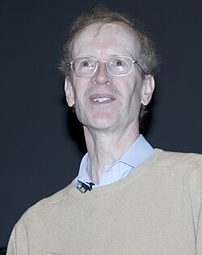
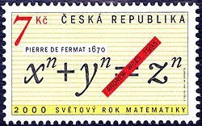
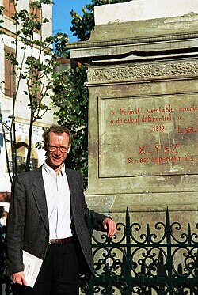

Sir Andrew Wiles | |
|---|---|
 Wiles in 2005 | |
| Born | Andrew John Wiles 11 April 1953 Cambridge, England |
| Education | Merton College, Oxford (BA) Clare College, Cambridge (MA, PhD) |
| Known for | Proving the Taniyama–Shimura conjecture for semistable elliptic curves, thereby proving Fermat's Last Theorem Proving the main conjecture of Iwasawa theory |
| Awards |
|
| Scientific career | |
| Fields | Mathematics |
| Institutions | |
| Thesis | Reciprocity Laws and the Conjecture of Birch and Swinnerton-Dyer (1979) |
| John Coates[2][3] | |
Doctoral students | |
Sir Andrew John Wiles (born 11 April 1953) is an English mathematician and a Royal Society Research Professor at the University of Oxford, specialising in number theory. He is best known for proving Fermat's Last Theorem, for which he was awarded the 2016 Abel Prize and the 2017 Copley Medal and for which he was appointed a Knight Commander of the Order of the British Empire in 2000.[1] In 2018, Wiles was appointed the first Regius Professor of Mathematics at Oxford.[4] Wiles is also a 1997 MacArthur Fellow.
Wiles was born in Cambridge to theologian Maurice Frank Wiles and Patricia Wiles. While spending much of his childhood in Nigeria, Wiles developed an interest in mathematics and in Fermat's Last Theorem in particular. After moving to Oxford and graduating from there in 1974, he worked on unifying Galois representations, elliptic curves and modular forms, starting with Barry Mazur's generalizations of Iwasawa theory. In the early 1980s, Wiles spent a few years at the University of Cambridge before moving to Princeton University, where he worked on expanding out and applying Hilbert modular forms. In 1986, upon reading Ken Ribet's seminal work on Fermat's Last Theorem, Wiles set out to prove the modularity theorem for semistable elliptic curves, which implied Fermat's Last Theorem. By 1993, he had been able to convince a knowledgeable colleague that he had a proof of Fermat's Last Theorem, though a flaw was subsequently discovered. After an insight on 19 September 1994, Wiles and his student Richard Taylor were able to circumvent the flaw, and published the results in 1995, to widespread acclaim.
In proving Fermat's Last Theorem, Wiles developed new tools for mathematicians to begin unifying disparate ideas and theorems. His former student Taylor along with three other mathematicians were able to prove the full modularity theorem by 2000, using Wiles's work. Upon receiving the Abel Prize in 2016, Wiles reflected on his legacy, expressing his belief that he did not just prove Fermat's Last Theorem, but pushed the whole of mathematics as a field towards the Langlands program of unifying number theory.[5]
Wiles was born on 11 April 1953 in Cambridge, England, the son of Maurice Frank Wiles (1923–2005) and Patricia Wiles (née Mowll). From 1952 to 1955, his father worked as the chaplain at Ridley Hall, Cambridge, and later became the Regius Professor of Divinity at the University of Oxford.[6]
Wiles began his formal schooling in Nigeria, while living there as a very young boy with his parents. However, according to letters written by his parents, for at least the first several months after he was supposed to be attending classes, he refused to go. From that fact, Wiles himself concluded that in his earliest years, he was not enthusiastic about spending time in academic institutions. In an interview with Nadia Hasnaoui in 2021, he said he trusted the letters, yet he could not remember a time when he did not enjoy solving mathematical problems.[7]
Wiles attended King's College School, Cambridge,[8] and The Leys School, Cambridge.[9] Wiles told WGBH-TV in 1999 that he came across Fermat's Last Theorem on his way home from school when he was 10 years old. He stopped at his local library where he found a book The Last Problem, by Eric Temple Bell, about the theorem.[10] Fascinated by the existence of a theorem that was so easy to state that he, a ten-year-old, could understand it, but that no one had proven, he decided to be the first person to prove it. However, he soon realised that his knowledge was too limited, so he abandoned his childhood dream until it was brought back to his attention at the age of 33 by Ken Ribet's 1986 proof of the epsilon conjecture, which Gerhard Frey had previously linked to Fermat's equation.[11]
In 1974, Wiles earned his bachelor's degree in mathematics at Merton College, Oxford.[6] Wiles's graduate research was guided by John Coates, beginning in the summer of 1975. Together they worked on the arithmetic of elliptic curves with complex multiplication by the methods of Iwasawa theory. He further worked with Barry Mazur on the main conjecture of Iwasawa theory over the rational numbers, and soon afterward, he generalised this result to totally real fields.[12][13]
In 1980, Wiles earned a PhD while at Clare College, Cambridge.[3] After a stay at the Institute for Advanced Study in Princeton, New Jersey, in 1981, Wiles became a Professor of Mathematics at Princeton University.[14]
In 1985–86, Wiles was a Guggenheim Fellow at the Institut des Hautes Études Scientifiques near Paris and at the École Normale Supérieure.[14]
In 1988, Wiles married Nada Canaan, a Princeton student who obtained her Ph.D. in molecular biology in the same year. The couple has three daughters.[15]
In 1989, Wiles was elected to the Royal Society. At that point according to his election certificate, he had been working "on the construction of ℓ-adic representations attached to Hilbert modular forms, and has applied these to prove the 'main conjecture' for cyclotomic extensions of totally real fields".[12]
From 1988 to 1990, Wiles was a Royal Society Research Professor at the University of Oxford, and then he returned to Princeton. From 1994 to 2009, Wiles was a Eugene Higgins Professor at Princeton.
Starting in mid-1986, based on successive progress of the previous few years of Gerhard Frey, Jean-Pierre Serre and Ken Ribet, it became clear that Fermat's Last Theorem (the statement that no three positive integers a, b, and c satisfy the equation an + bn = cn for any integer value of n greater than 2) could be proven as a corollary of a limited form of the modularity theorem (unproven at the time and then known as the "Taniyama–Shimura–Weil conjecture").[16] The modularity theorem involved elliptic curves, which was also Wiles's own specialist area, and stated that all such curves have a modular form associated with them.[17][18] These curves can be thought of as mathematical objects resembling solutions for a torus's surface, and if Fermat's Last Theorem were false and solutions existed, "a peculiar curve would result". A proof of the modularity theorem therefore would have as a consequence that such a curve would not exist.[19]
The conjecture was seen by contemporary mathematicians as important, but extraordinarily difficult or perhaps impossible to prove.[20]: 203–205, 223, 226 For example, Wiles's ex-supervisor John Coates stated that it seemed "impossible to actually prove",[20]: 226 and Ken Ribet considered himself "one of the vast majority of people who believed [it] was completely inaccessible", adding that "Andrew Wiles was probably one of the few people on earth who had the audacity to dream that you can actually go and prove [it]."[20]: 223
Despite this, Wiles, with his from-childhood fascination with Fermat's Last Theorem, decided to undertake the challenge of proving the conjecture, at least to the extent needed for Frey's curve.[20]: 226 He dedicated all of his research time to this problem for over six years in near-total secrecy, covering up his efforts by releasing prior work in small segments as separate papers and confiding only in his wife.[20]: 229–230
Wiles's research involved creating a proof by contradiction of Fermat's Last Theorem, which Ribet in his 1986 work had found to have an elliptic curve and thus an associated modular form if true. Starting by assuming that the theorem was incorrect, Wiles then contradicted the Taniyama–Shimura–Weil conjecture as formulated under that assumption, with Ribet's theorem (which stated that if n were a prime number, no such elliptic curve could have a modular form, so no odd prime counterexample to Fermat's equation could exist). Wiles also proved that the conjecture applied to the special case known as the semistable elliptic curves to which Fermat's equation was tied. In other words, Wiles had found that the Taniyama–Shimura–Weil conjecture was true in the case of Fermat's equation, and Ribet's finding (that the conjecture holding for semistable elliptic curves could mean Fermat's Last Theorem is true) prevailed, thus proving Fermat's Last Theorem.[21][22][16]
In June 1993, he presented his proof to the public for the first time at a conference in Cambridge. Gina Kolata of The New York Times summed up the presentation as follows:
He gave a lecture a day on Monday, Tuesday and Wednesday with the title "Modular Forms, Elliptic Curves and Galois Representations". There was no hint in the title that Fermat's last theorem would be discussed, Dr. Ribet said. ... Finally, at the end of his third lecture, Dr. Wiles concluded that he had proved a general case of the Taniyama conjecture. Then, seemingly as an afterthought, he noted that that meant that Fermat's last theorem was true. Q.E.D.[19]
In August 1993, it was discovered that the proof contained a flaw in several areas, related to properties of the Selmer group and use of a tool called an Euler system.[23][24] Wiles tried and failed for over a year to repair his proof. According to Wiles, the crucial idea for circumventing—rather than closing—this area came to him on 19 September 1994, when he was on the verge of giving up. The circumvention used Galois representations to replace elliptic curves, reduced the problem to a class number formula and solved it, among other matters, all using Victor Kolyvagin's ideas as a basis for fixing Matthias Flach's approach with Iwasawa theory.[24][23] Together with his former student Richard Taylor, Wiles published a second paper which contained the circumvention and thus completed the proof. Both papers were published in May 1995 in a dedicated issue of the Annals of Mathematics.[25][26]
In 2011, Wiles rejoined the University of Oxford as Royal Society Research Professor.[14]
In May 2018, Wiles was appointed Regius Professor of Mathematics at Oxford, the first in the university's history.[4]

Wiles's work has been used in many fields of mathematics. Notably, in 1999, three of his former students, Richard Taylor, Brian Conrad, and Fred Diamond, working with Christophe Breuil, built upon Wiles's proof to prove the full modularity theorem.[27][16] Wiles's doctoral students have also included Manjul Bhargava (2014 winner of the Fields Medal), Ehud de Shalit, Ritabrata Munshi (winner of the SSB Prize and ICTP Ramanujan Prize), Karl Rubin (son of Vera Rubin), Christopher Skinner, and Vinayak Vatsal (2007 winner of the Coxeter–James Prize).
In 2016, upon receiving the Abel Prize, Wiles said about his proof of Fermat's Last Theorem, "The methods that solved it opened up a new way of attacking one of the big webs of conjectures of contemporary mathematics called the Langlands Program, which as a grand vision tries to unify different branches of mathematics. It’s given us a new way to look at that".[5]

Wiles's proof of Fermat's Last Theorem has stood up to the scrutiny of the world's other mathematical experts. Wiles was interviewed for an episode of the BBC documentary series Horizon[28] about Fermat's Last Theorem. This was broadcast as a 1997 episode of the PBS science television series Nova in Season 25 with the title "The Proof".[10] His work and life are also described in great detail in Simon Singh's popular book Fermat's Last Theorem.
In 1988, Wiles was awarded the Junior Whitehead Prize of the London Mathematical Society (1988).[6] In 1989, he was elected a Fellow of the Royal Society (FRS)[29][12]
In 1994, Wiles was elected member of the American Academy of Arts and Sciences.[30] Upon completing his proof of Fermat's Last Theorem in 1995, he was awarded the Schock Prize,[14] Fermat Prize,[31] and Wolf Prize in Mathematics that year.[14] Wiles was elected a Foreign Associate of the National Academy of Sciences[13] and won an NAS Award in Mathematics from the National Academy of Sciences,[32] the Royal Medal, and the Ostrowski Prize in 1996.[33] He won the American Mathematical Society's Cole Prize,[34] a MacArthur Fellowship, and the Wolfskehl Prize in 1997,[35] and was elected member of the American Philosophical Society that year.[36]
In 1998, Wiles was awarded a silver plaque from the International Mathematical Union recognising his achievements, in place of the Fields Medal, which is restricted to those under the age of 40 (Wiles was 41 when he proved the theorem in 1994).[37] That same year, he was awarded the King Faisal Prize[38] along with the Clay Research Award in 1999,[14] the year the asteroid 9999 Wiles was named after him.[39]
In 2000, he was awarded Knight Commander of the Order of the British Empire.[40] In 2004, Wiles won the Premio Pitagora.[41] In 2005, he won the Shaw Prize.[31]
The building at the University of Oxford housing the Mathematical Institute was named after Wiles in 2013.[42] Later that year he won the Abel Prize.[43][44][45][46][47] In 2017, Wiles won the Copley Medal.[1] In 2019, he won the De Morgan Medal.[48]
One or more of the preceding sentences incorporates text from the royalsociety.org website where: All text published under the heading 'Biography' on Fellow profile pages is available under Creative Commons Attribution 4.0 International License.
{kind=link}
{kind=link}
{kind=link}